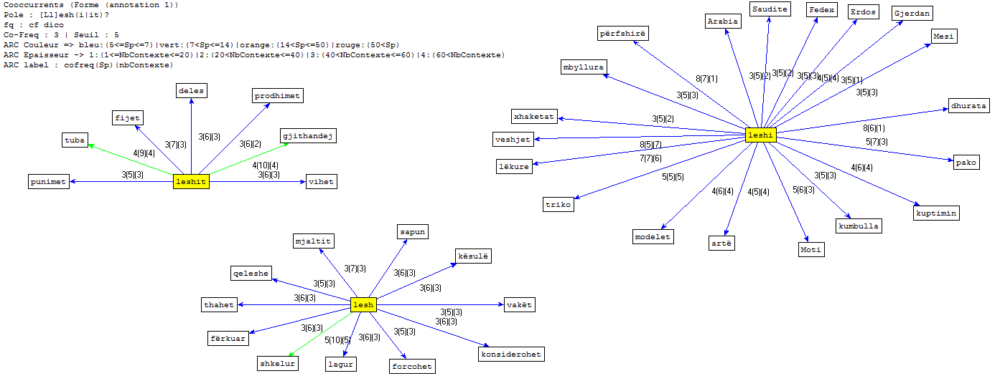

English
English Français
FrançaisOur analysis
Analysis of Albanian results

To analyze the dump files with Trameur, we looked at the different cases of the lexeme LESH : "lesh" (*a wool, translated into "some wool"), "leshi" (wool) and "leshit" (from wool). The analysis with Trameur highlights several themes:
the processing of wool
sheep, wet, rubbed, dried, spun, threads, balls
We can easily see the different stages of the processinf of wool.
fashion
clothing, jackets, hat, knitted sweater
Here are the most used woolen clothes. Except for the word "knitted sweater", there are no reference to the manufacturing process of these clothes.
handicraft
works, production, art, folds (traditional Albanian wool hat)
Although it contains a few words, this theme is essential for understanding the relationship between Albanians and wool. Indeed, we note the presence of the words "art", "work" and "folds", which means that the work of wool is associated with human and the notion of creation (and not with commercialization and machines). Moreover, the word "production" does not refer to economy but rather to "the action of production".
the gifts
packages, Fedex, honey, plums, Saudi Arabia, adornment, Mesi, gifts
This category can be surprising, yet it provides valuable information: wool and its products are often used as gifts. Thus, woolen socks, honey and plums are among the most popular products of their families by the Albanian Diaspora. Note also the presence of a precious carpet in wool on the list of gifts of the White House on the occasion of New Year in 2012 as well as a soccer ball of wool offered by a fan to Lionel Messi.
In conclusion, these results, if they reinforce our initial hypothesis (wool is mainly associated with handicrafts in Albania), make us realize that the textometric analysis of a corpus makes it possible to see it from a different point of view.
For further information, please consult the list of co-occurrences and concordances.
{kind=link}
Analysis of Arabic results

Our analysis with Trameur is based mainly on the result obtained during the cleaning process of the text to obtain a final graph which contains all the keywords related to the word studied which is الصوف, the equivalent of wool. We can see from our graph that all the words around the key word wool are about various themes. The most recurrent theme is clothes. By searching for our URLs we have tried to look at all geographical parts of the Arab world from the Maghreb to the Middle East as well as the countries of the Gulf. We thus perceive that the use of this material is very frequent in the manufacture of the traditional costumes worn among the Arabs.
The second theme is handmade. Thus we notice the occurrence of 3 keywords : manually, knitting, spinning. This shows that Arabs are always faithful to manual work without the need for machines. There are others process like cleaning the wool from the word washing and selling from the words: shops, cost, quantity and colorful. We can also see an occurrence that refers to the origin of the wool through the word sheep.
In the end, a last category was detected which refers to the different products made from wool. We noticed the presence of the words: products, socks, threads. From all this we find that the graph obtained covers almost all the elements related to wool from the moment of its transformations into products usable by the human being without forgetting the different stages of the proxessing of wool. From the sheep that provides wool to washing, knitting, coloring and selling, we observe the cycle that this product follows step by step.
For further information, please consult the list of co-occurrences and concordances.
{kind=link}
Analysis of French results
Our analysis with Trameur is based mainly on the results obtained during the cleaning process of the dump file. The result of this analysis is a graph. It contains all the key words related to "wool". We can see that the words around the word "wool" refer to the different animals that produce this material and to the words that designate the steps of the processing of wool and the adjectives that qualify it. The presence of these adjectives refers to the fact that the use of this material in France is very frequent in the manufacture of luxurious clothes. In conclusion, we can see that the graph obtained contains almost all the elements related to wool from its natural state up to the moment of its transformation into products usable by the human being.
For further information, please consult the list of co-occurrences and concordances.
{kind=link}